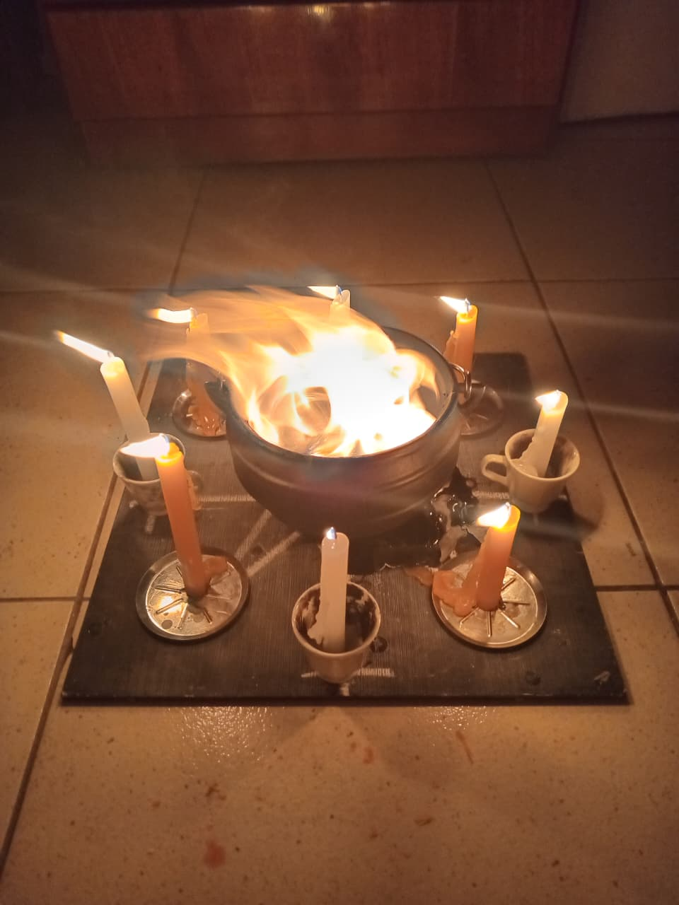
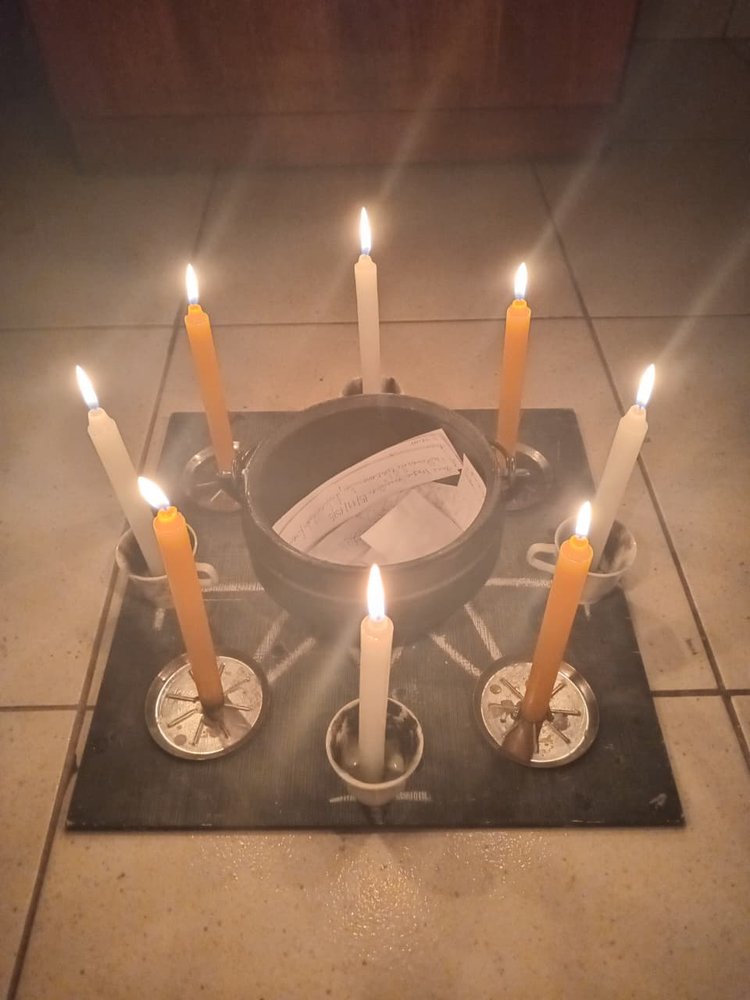
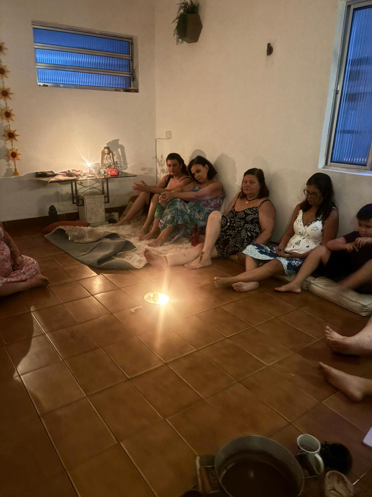
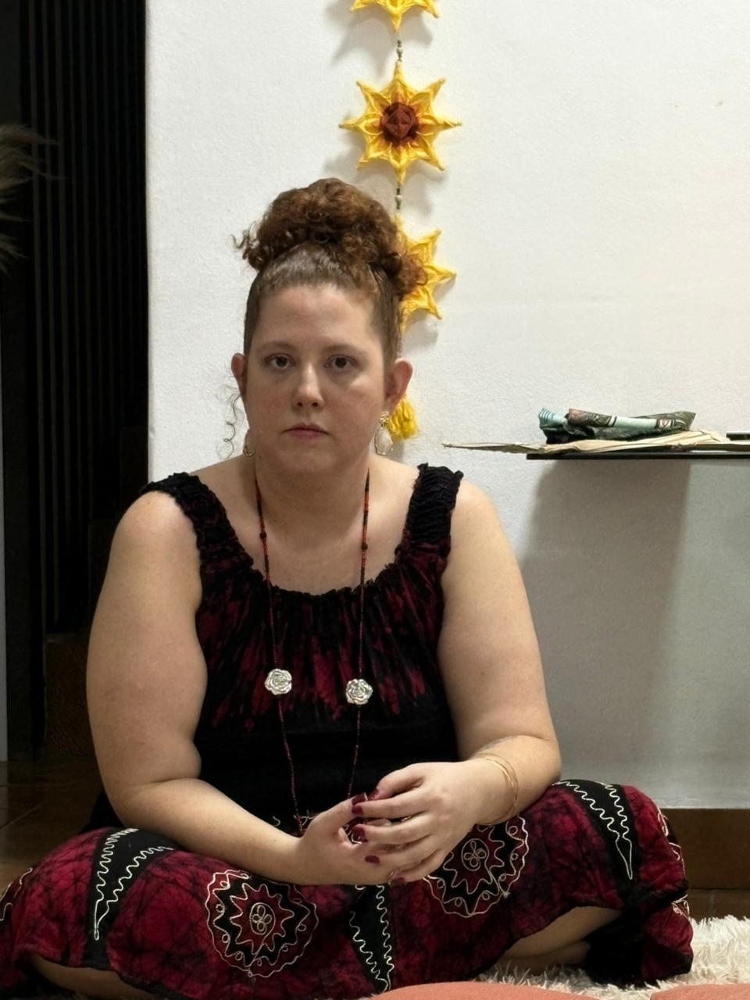
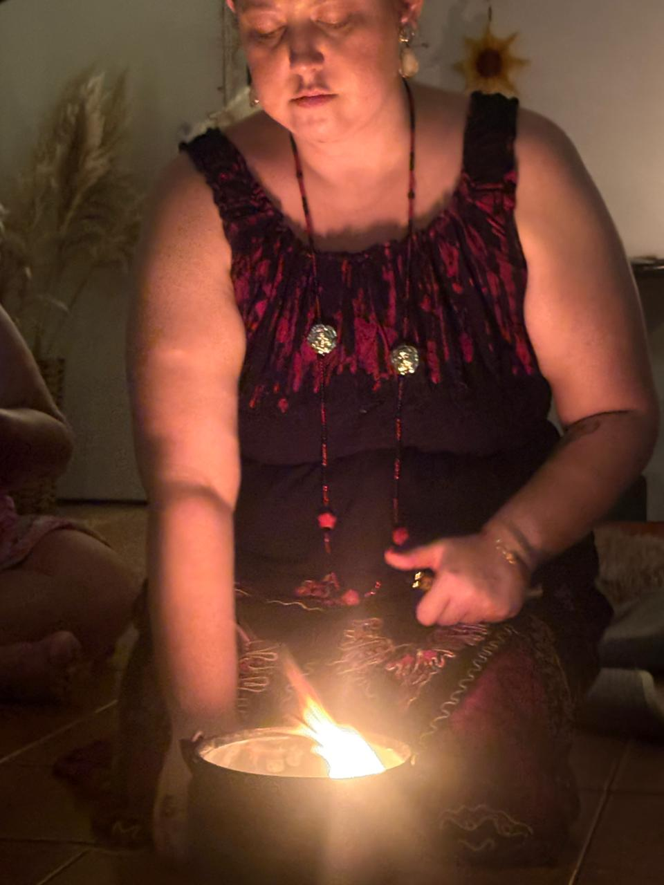
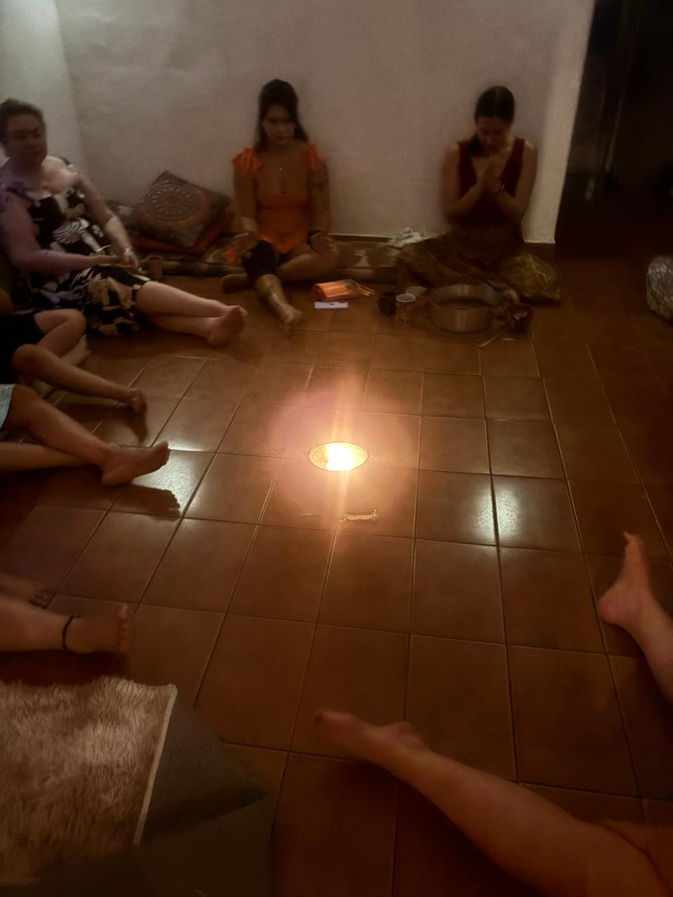

Reconhecer
Olhar para padrões, perdas, aprendizados e desejos sem transformar memória em sentença.

Um encontro para reconhecer o que atravessou o ano, fechar o que já cumpriu seu tempo e escolher o próximo ciclo com consciência.

No fogo, damos forma ao que já não queremos carregar da mesma maneira. Em seguida, no papel, podemos nomear, transformar e devolver significado ao que foi vivido.
Olhar para padrões, perdas, aprendizados e desejos sem transformar memória em sentença.
Dar um gesto consciente ao encerramento: escrever, oferecer ao fogo e assumir novas escolhas.
Levar da experiência uma intenção possível, realista e alinhada ao próximo ciclo.

Círculo de presença
Condução
Gesto simbólico
Encontro compartilhadoDar passagem ao que já não precisa ocupar o mesmo lugar.
Transformar emoção em palavra, intenção ou decisão consciente.
Vivenciar a experiência sem comparar, competir ou se expor.
Reserve seu lugar na Queima de Karmas e comece o encerramento do ano com um gesto consciente.
Reservar vaga no WhatsAppExperiência simbólica, espiritual e reflexiva. Não substitui acompanhamento psicológico, médico, jurídico ou financeiro, nem garante cura, remoção de karma ou resultados futuros.